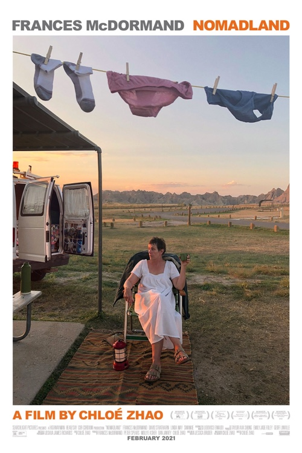

Ян Ван Эйк
Jon Hopkins - Immunity (2018)
Вдруг вспомнил про этот альбом и захотел переслушать. И снова залип.
Подстрочник. Жизнь Лилианны Лунгиной, рассказанная ею в фильме Олега Дормана
Я узнал про этот фильм и книгу из вот этого интервью Олега Дормана. Я не смог найти фильм, поэтому читаю книгу, но в голове у меня все равно звучит ее голос (и если хотите такого же эффекта, то посмотрите интервью, в котором есть фрагменты фильма, или найдите сам фильм).
Ну и, конечно, это непременно нужно читать. Или смотреть. Или слушать. Непременно.
Земля кочевников

Посмотрел с удовольствием!
Россия

Понравилась инсталляция Константина Беньковича — Часы "Россия":
Нижний Новгород – место, навсегда связанное с Андреем Сахаровым, Борисом Немцовым и Ириной Славиной. Академик Андрей Сахаров – предвестник нового времени и новой страны - провел семь лет в ссылке в Горьком за борьбу с тоталитарной системой. Борис Немцов – первый Нижегородский губернатор, перспективный политик, символ перемен и надежд – был убит за свои убеждения. Ирина Славина - независимая журналистка, общественная деятельница – совершила акт самосожжения в ответ на беззаконие, оставив перед смертью запись в Фейсбуке: "В моей смерти прошу винить Российскую Федерацию".
Механизм часов, подобно России сегодня, движется назад, а не вперёд. В 1991 году, после распада СССР, было время надежд жить в стране победившей демократии с набором либеральных ценностей, со свободой слова, сменяемостью власти, честным судом и равенством всех перед законом. Спустя тридцать лет эти надежды, к сожалению, не оправдались.
Очень точно.
Расследование Карагодина
Я прочитал о том, как Денис Карагодин выяснил имена сотрудников НКВД, причастных к убийству его деда, еще несколько лет назад, сейчас же, кажется, самое время об этом расследовании напомнить, потому что есть некоторая ненулевая вероятность, что родственники палачей все же добьются блокировки ресурса, представляюещего, на мой взгляд, неоспоримую историческую ценность.
Информационные автократии
Популярное объяснение текущей ситуации.
Yussef Dayes Trio — Welcome to the Hills (2020)
Кайф, как, впрочем, и все остальное.
Контрольные отпечатки (1989-2008)
35 коротеньких серий, в которых фотографы сами рассказывают про свои снимки. Кайф.